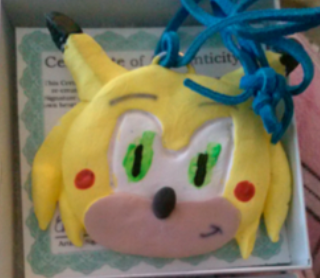
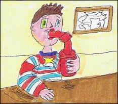
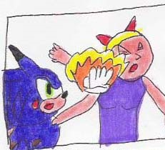
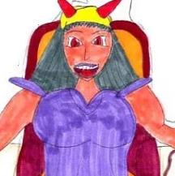
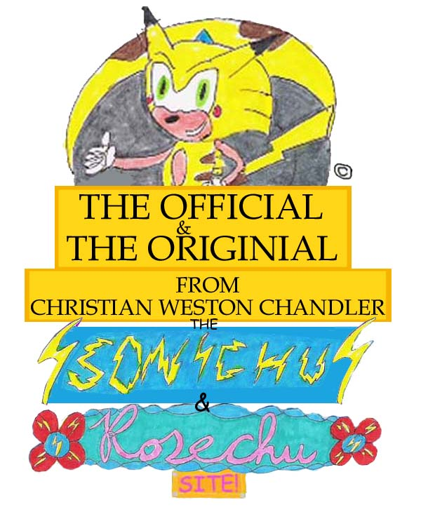
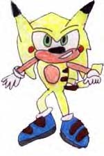
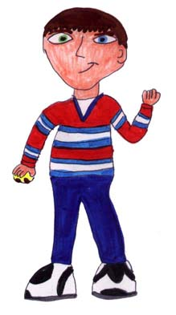
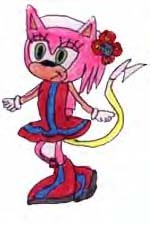

**All Other Websites Un-Officially Associated with Sonichu And Rosechu.com**
The Official CHris Chan Wiki the CWCki.
The Truth that was on the page, while temporarily deleted.
    Logo designed by Cristain W. Chandler, Copyright: 3/17/2000. 8)
Website due on May 7, 2020
Updated from: 5/1/2009
*All Sonichu material is Copyrighted March, 2000-2009 by. Christian Weston Chandler.



Welcome...
To The Offcial Chris Chan Introduction Site!
AND REMEMBER, ONLY All that is Truly of
Christian Weston Chandler, IS HERE being presented to you right now
Chris Chan is quite possibly the most important person to this “genre” of content, he is the original person that people have followed, almost since the inception of the internet. His whole life, even since childbirth, has been documented by countless people. Who is he? Why are so many people interested in his life story? Why would so many people go through such great lengths to document everything he has ever done? Most people would think he is a super interesting content creator that creates things that really interest people, he only fill the latter half of those requirements though. If you want a solid answer of why Chris Chan has been documented for so long, it is because of trolls and documentors. Chris Chan has been trolled his whole life in so many different ways its hard to count, this is a collection of some of his stories.
It would be pretty hard to talk about Chris Chan with out talking about his favorite creation, Sonichu the electric hedgehog Pokemon. This character was created in one of Chris’s art classes in school when he needed to create an original character for his art class. This one creation would send Chris down into a spiral as later on in his life he would begin creating comics around his Sonichu. He posted these comics on his website, which was launched on August 29, 2000, he was 18 at the time.
Through a combination of his website and you tube account Chris would soon garner a large fan base which would ultimately change his life, defiantly for the worse. Chris Chan is one of the most targeted and harassed people on the entirety of the internet. The main thing the trolls would interfere with over and over again was Chris’s love life. He had an unhealthy obsession with trying to find a girlfriend, this is a problem that the trolls would exploit countless times to get Chris to shame himself or reveal information.
Chris’s first exploit to try finding a girlfriend was the infamous sign. He would go to his college and hold up a sign in hopes to try to attack a cute 18-21 single female companion.
Chris describes the women in detail on the poster, she must be:
- average to slender body type
- lives in Charletsvile or Ruckervils area
- does not some or drink
- average/high income
- white
Mary Lee Walsh, a campus adviser, steps in and tells Chris that he cannot keep doing this, Chris then resorts to leaving Sonichu comics all over the campus all containing “personal ads”. This escalated to a point where Chris attacks her, but it is unknown whether Chris physically attacked her or he just link “curse-ye-ha-me-ha”. This is a move where Chris does the action of a “ka-me-ha-me-ha”, an energy attack used in the anime Dragon Ball, in combination with a curse to attack his detractors.
Chris would try this over again and would be stopped by different business mangers and police officers because he is basically soliciting sex. These incident would also spark another trend with Chris, the self assertion of himself and real world problems into his own comic.
Chris was originally a side character in his own comic, the mayor of the city cwicvile. Increasingly though Chris would self insert himself and his issues into his comic starting at Sonichu episode 4. From here own Chris would become the center of his own comic.
I don’t recommend reading any Chris’s comics, it is horribly structured and written months apart with a barley understandable plot. It also has increasingly graphic content as Chris is extremely homophobic and hates that fact that his trolls call his character gay. To disprove them Chris has fully drawn multiple comics where all of his character “prove” their sexuality in graphic detail. Chris also likes to brutally murder any of his detractors in his comics and has done so several times, the first being Mary Lee Walsh